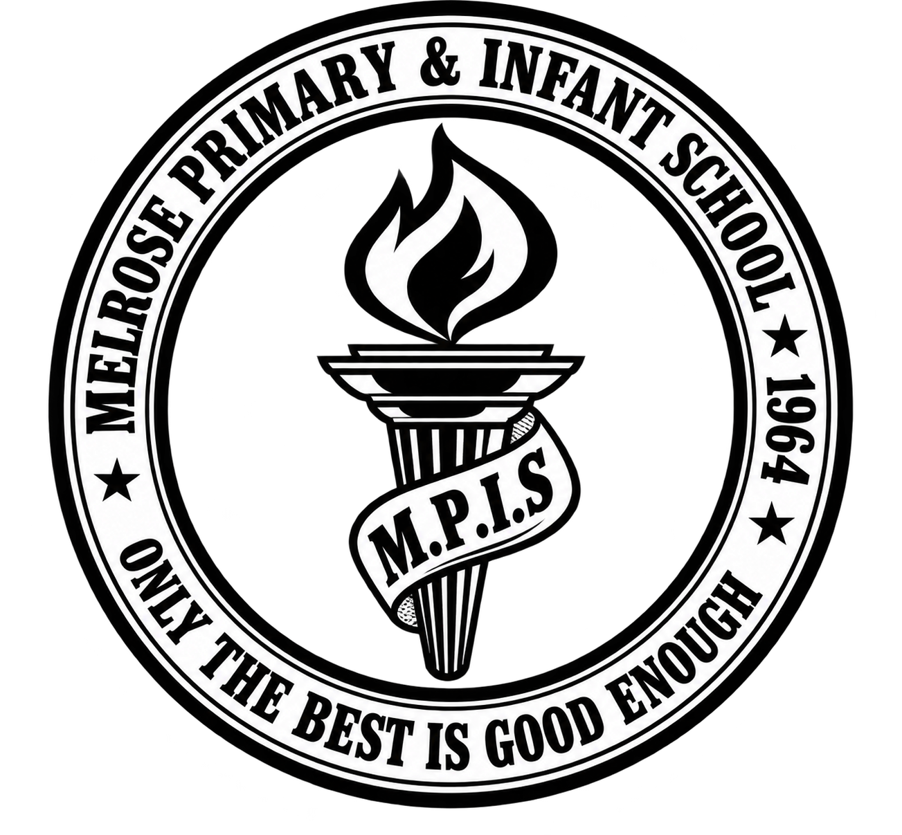

Arrange a School Visit
Please contact the school office with your preferred date and time. Visits are confirmed by the office; sending a request does not reserve an appointment.
Email a Visit Request ↗Or call (876) 926-0292.

Melrose Primary & Infant SchoolOnly the best is good enoughCome and meet us
We look forward to welcoming you to Melrose Primary & Infant School.
Please contact the school office with your preferred date and time. Visits are confirmed by the office; sending a request does not reserve an appointment.
Email a Visit Request ↗Or call (876) 926-0292.
3 Little Kew Road, Kingston 5
Visitors should report to the main office on arrival.
Registration Information